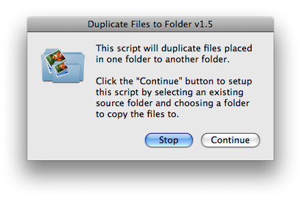

Auto-Backup on Import
Photographers often want to make a backup of the image files placed into a folder, into another folder, either on the startup disk or a mounted backup drive.
The Duplicate Files to Folder application makes this easy to accomplish. It will duplicate files placed in a chosen source folder to a chosen destination folder, automatically incrementing the names of the copied files if duplicate files exist in the destination folder.
Setup is simple. Just launch the application and choose the source folder and the destination folder -- that's all you have to do. Each time an image file is added to the source folder, the script will wait for it to complete its transfer and then duplicate it to the chosen destination folder.
